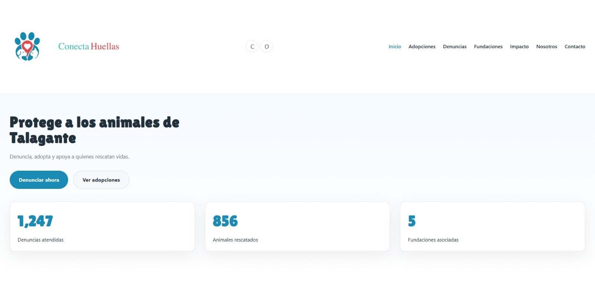
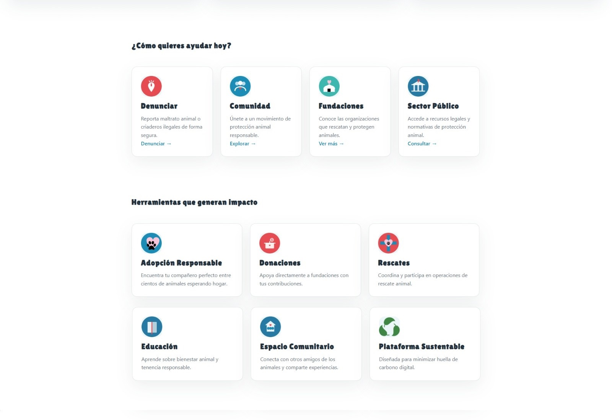
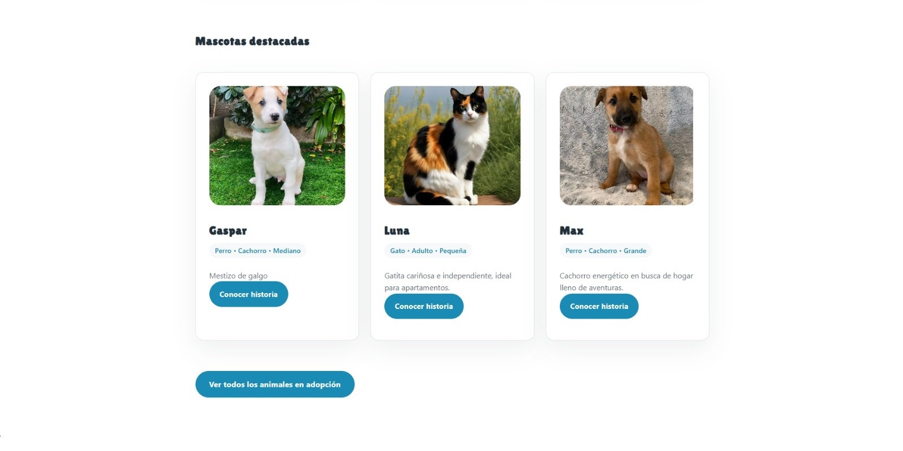
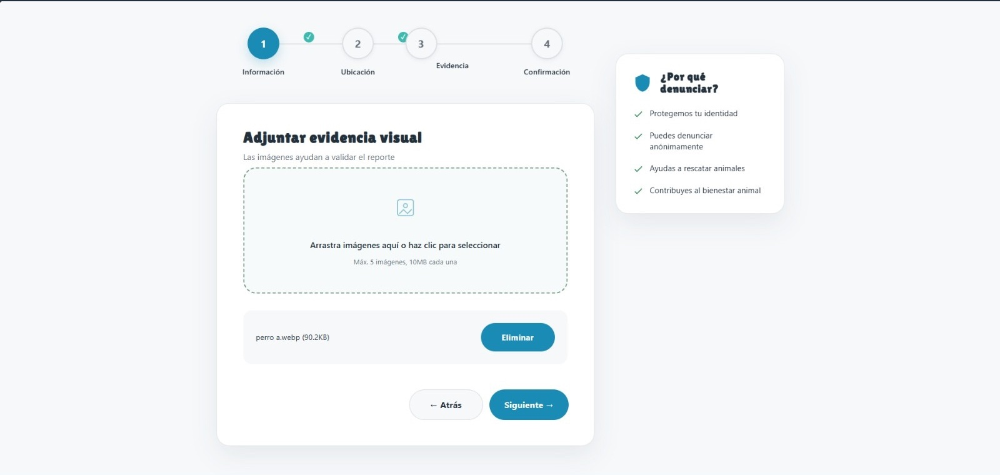
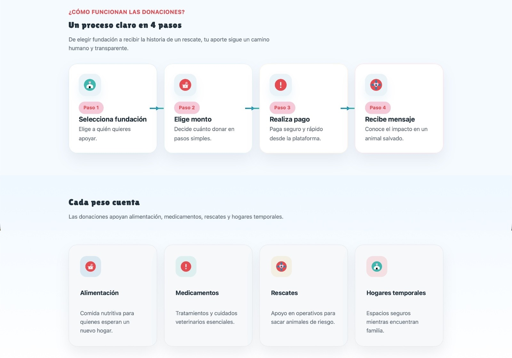
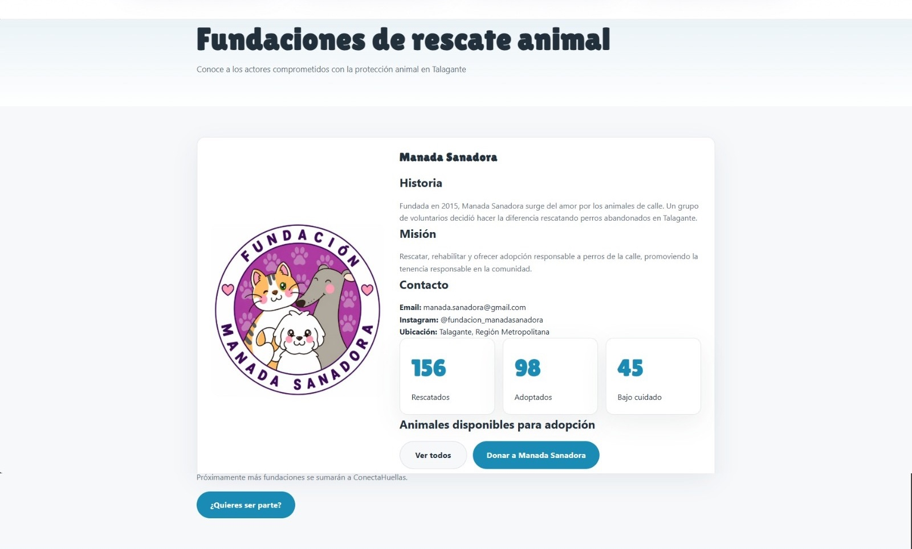
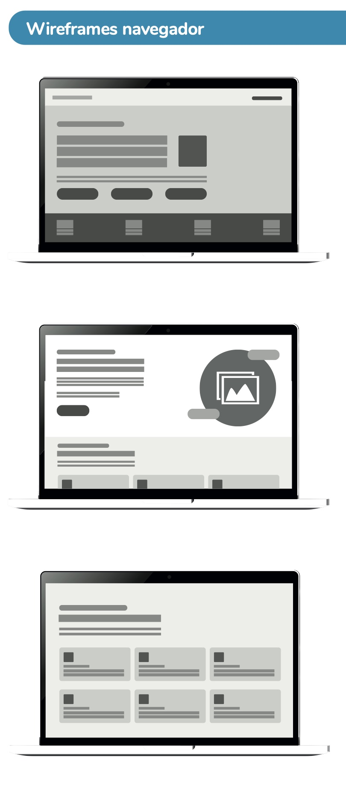
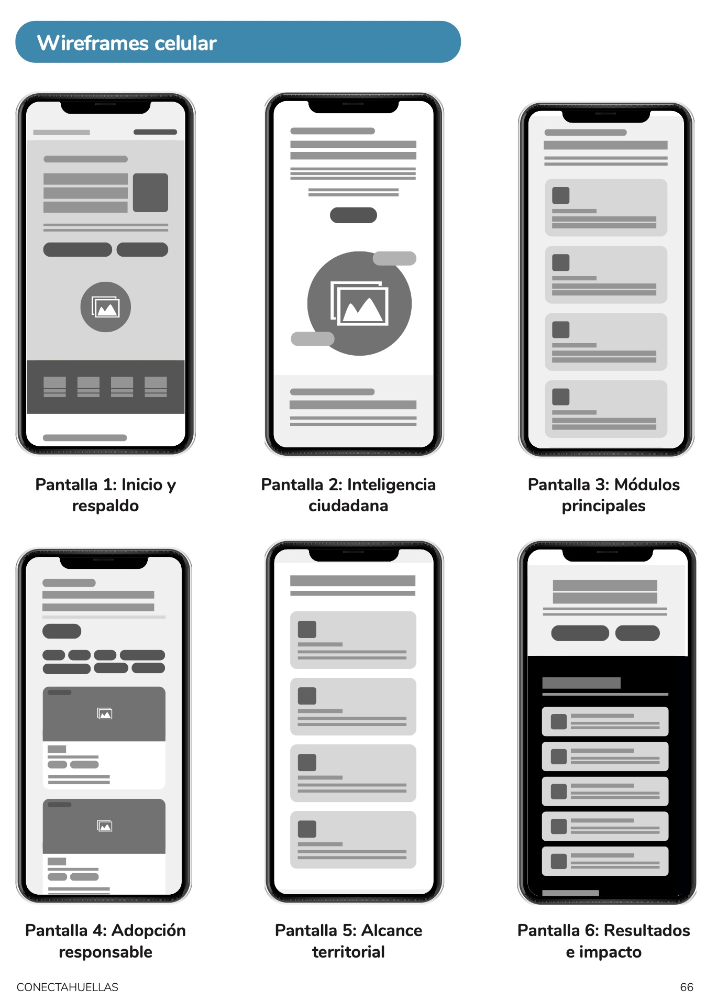

ConectaHuellas
Propuesta digital para orientar denuncias y promover la protección animal en Talagante.
Colaboradores: Alinette Galdames y Constanza Díaz
Más sobre el proyecto
Caso de estudio / Talagante, Chile
Una propuesta digital y gráfica para visibilizar criaderos ilegales, orientar las denuncias ciudadanas y promover la protección animal en Talagante.
Una conexión para actuar mejor.
El proyecto plantea una plataforma que acerque a vecinos, organizaciones de rescate y entidades públicas frente a situaciones de riesgo animal.
El desafío
El informe identifica canales de denuncia poco claros, desinformación y una fiscalización limitada en sectores rurales y periurbanos. A esto se suma la sobrecarga de las organizaciones de rescate.
La respuesta propuesta
Centralizar orientación y denuncias, facilitar la derivación de casos y sumar contenidos de educación preventiva mediante una experiencia digital accesible.
Territorio: Talagante, Chile · Enfoque: protección y bienestar animal · Encuesta: 21 residentes.
La encuesta fue exploratoria y no representa estadísticamente a toda la población de Talagante.
Entender antes de diseñar.
La exploración destaca necesidades de orientación confiable, denuncia anónima y educación para tomar decisiones responsables.
Los mapas de empatía del informe son perfiles de trabajo, no testimonios de participantes reales.
- Contar con un canal claro para reportar una situación sin exponerse.
- Recibir orientación y seguimiento comprensibles durante el proceso.
- Acceder a información preventiva sobre bienestar y tenencia responsable.
De una alerta a una derivación.
El informe plantea un recorrido de denuncia y coordinación entre ciudadanía, fundaciones y organismos competentes.
Reportar
La persona entrega información de una posible situación de riesgo.
Evaluar
La propuesta contempla una revisión inicial por parte de una organización de rescate.
Derivar
Según el caso, se considera coordinar apoyo con rescatistas, municipio u organismos pertinentes.
Este recorrido describe la propuesta del informe. No implica que el servicio esté activo ni que haya sido validado formalmente con integrantes de la fundación.
Primero, ordenar la experiencia.
Wireframes originales para navegador y celular. Muestran jerarquía y módulos antes de aplicar la interfaz visual.
Una propuesta visual cercana y clara.
Las pantallas finales priorizan navegación directa, información legible y acceso a los recorridos principales.
Una identidad amable y reconocible.
El sistema combina una paleta cálida, tipografía expresiva e iconografía para diferenciar los módulos de la plataforma.
El informe señala que los iconos aún requerían pruebas de usabilidad antes de una posible implementación.
Galería
Wireframes y pantallas de la propuesta.
Las pantallas muestran una propuesta, no un sitio desplegado: las cifras, perfiles, módulos, fichas y datos de contacto son contenido de muestra. Adopción y donaciones son ideas para etapas futuras.








